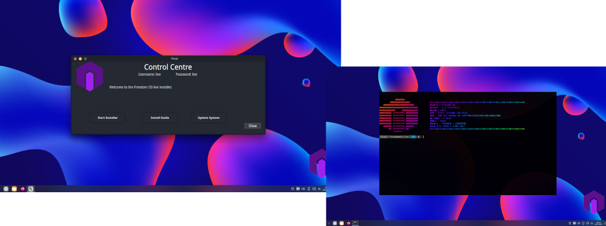

About FreedomOS
FreedomOS started development in mid 2022 as a side project. At first this was meant to be "just another installer" but quickly escelated from that.
We have our own repositorys for our core packages and custom packages. This is growing each day as more packages get added.
Since FreedomOS nativly supports the AUR we shouldn't have any need to keep using the Arch repositorys.
Why the name FreedomOS? No idea, it sounded like a good name at the time. NOTE: we are NOT affiliated with Freedom Phone nor will we ever be. But that said we do plan on integrating Android app support in the future.
Who is behind FreedomOS? Our Dev team is only small. So small they can fit behind one computer. FreedomOS is developed and maintained by Frazer Grant. This project was started to keep my skills up and learn new things. Having left the IT industry several years ago to be come a HGV driver, i needed a project to do and this was it.